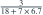
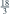
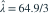

10 个独立指数寿命同时开始观测，观测到第 3 个失效即停止，失效时刻为 5.3、6.0、6.7。总体平均寿命  的 MLE 为？
的 MLE 为？
的 MLE 为？- A
- B

- C
- D

我已思考，展开答案与解析
正确答案：C
- 停止时其余 7 个寿命只知大于 6.7，总在险时间为 。
- 以均值参数写似然为常数乘 ，最大化得

。
易错提醒这里 λ 是平均寿命，与常用速率参数互为倒数。
JYSG · 432精选 · 册内北京师范大学432·2026年·三(3)；给定样本量变式；PDF第64页（印刷页62）
同结构变式